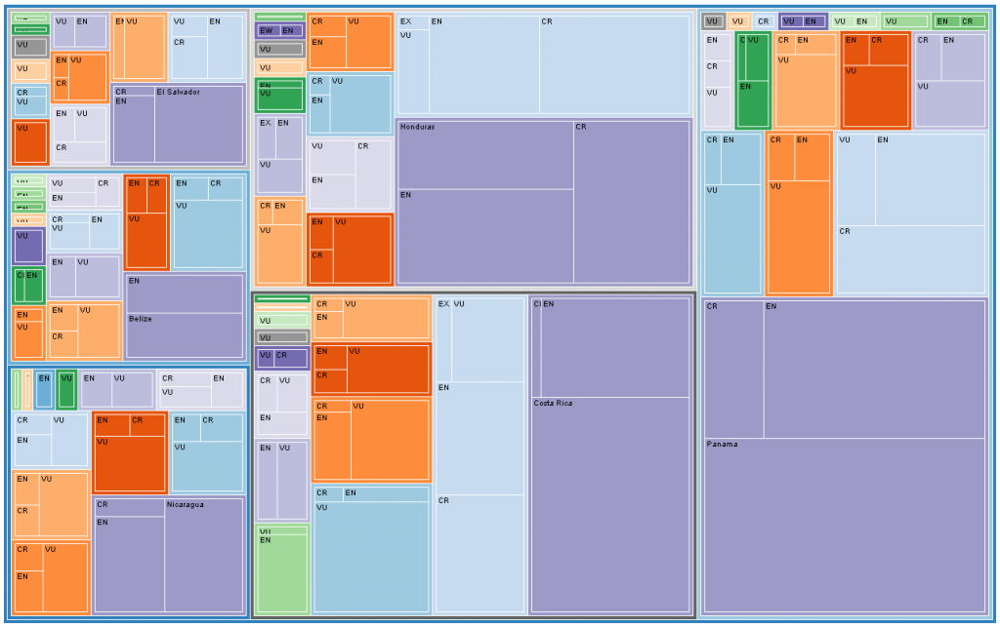

A couple of variations on representing biodiversity databases:

The first is the radial layout in Gephi, which functionally transitions an excellent network analysis and visualization package into a tool for beautiful representation of variation in non-network data. Color, once again, represents threat status. Pink is vulnerable, red endangered, purple critically endangered and black extinct. Each spoke is a country, and each class-status is given its own circle, so a rough concept of class diversity is also displayed.
